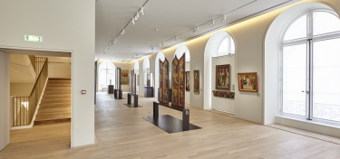
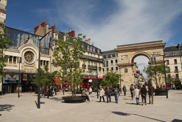
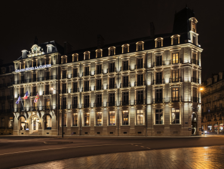

Guided tour of today’s program! French commune, capital of Burgundy, this city currently has about 254000 inhabitants by counting the outskirts. It is a city of history, cultures and flavors, as with the example of The mustard of Dijon. I decided to present this place to you because I have lived there for many years now. It is an important place in my life because this is where my journey began, however how did I land here, I have no idea. Dijon is primarily a way of life. Many monuments are present in the city, such as the emblematic Liberation Square, where our visit begins. From this large bustling square we can see the town hall of Dijon, linked with the Museum of Fine Arts. In the evening the square is filled and the terraces become complete. Fountains vibrate to the rhythm of music atmosphere of the bars. At Noel, a large fir tree sits in the center of the square and many sheds of churros and pretzels appear.
By going to some corners, the atmosphere becomes different. Going up the Rue de la Liberté, the Rue des rendez-vous shopping between friends in the afternoons and between classes, we walk along the many shops. Another place is presented to us, the Place François Rude, aka the Place du Carrousel, The main venue of the animations and the period carousel.

Let’s continue our visit to reach Darcy Place where the Guillaume's Door is a standard bearer. This lively square makes the main link with the other places of the city thanks to its tram network which extends to the outskirts of the city.
Let us stop for a moment in this square. From a distance we can observe the prestigious Grand Hotel La Cloche. A place of luxury and refinement, I attach particular importance to it, linking my ambition to the image of this building.
It should be noted that Dijon has been classified as the greenest city in France according to Forbes France. Kir Lake is a good example. Many parks are present in the city, such as the Darcy Garden or the Arquebuse Garden, near the train station.
Back to the top !